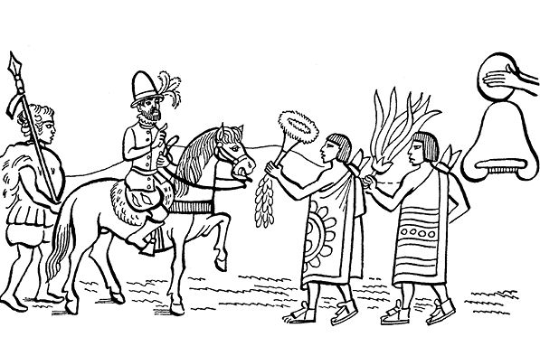
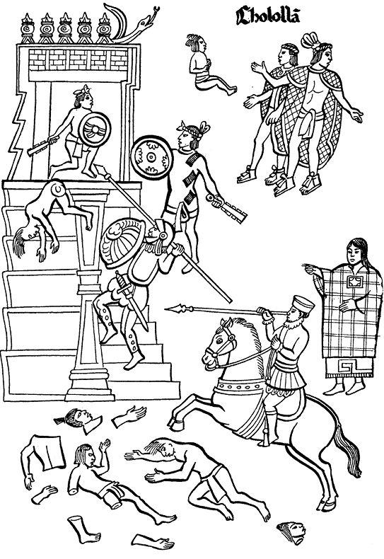

阿兹特克帝国驻华使馆
目录 |
第五章 西班牙人出兵，到达特拉斯卡拉和乔卢拉
导 言
尽管蒙泰古祖玛的使者们力图阻止西班牙人靠近墨西哥-特诺奇蒂特兰，科尔特斯及其手下还是决定上路。本章所摘录的印第安人写的两个片段——第一段选自萨阿贡实情提供者提供的片段，第二段选自卡马戈的《特拉斯卡拉历史》——向我们讲述了西班牙人来到特拉斯卡拉和乔卢拉的情况。 印第安实情提供者所写的部分叙述了西班牙人与来自特克艾克的奥托米人之间的战斗。第二部分讲述特拉斯卡拉人1如何和平地接受了西班牙人。西班牙人刚到，特拉斯卡拉人便密谋策划反对乔卢拉人和墨西哥人。 了解一下关于西班牙人在乔卢拉大屠杀的两个不同版本是很有意思的。一个是萨阿贡实情提供者的版本，另一个是《特拉斯卡拉历史》作者的版本。第一个版本将大屠杀归因为特拉斯卡拉人的阴谋：他们“从骨子里燃烧着对乔卢拉人的仇恨”；第二个版本，《特拉斯卡拉历史》则持相反观点，认为乔卢拉人是因为不屈从于西班牙人而咎由自取：乔卢拉人不顾仁义，杀害了前来劝说乔卢拉人与西班牙人结盟的特拉斯卡拉使节巴特拉瓦特辛。这一说法很可能是特拉斯卡拉人因他们参与了乔卢拉的大屠杀而编造的。因此这一说法无论在贝尔纳尔·迪亚斯·德尔·卡斯蒂略2的《信史》，还是在科尔特斯的《信札》3里都没得到印证。
西班牙人出兵
最终，西班牙人还是上路向南边进军了。 当西班牙人正在窥探乡村和城市的时候，一个名叫特拉克奇卡尔卡特尔、会讲纳瓦特尔语的森波阿里阿的男子，看到了这一切。他为他们带路，为他们找寻捷径，带领他们前进。 他们来到了属于特拉斯卡拉的土地，当地居民奥托米人管这里叫特克艾克地区，奥托米人以战争的方式带着盾牌迎接他们的到来。 但是，西班牙人将他们都分割包围起来，用炮轰、用剑围、用弓箭射，不费吹灰之力就彻底打败了这些居住在特克艾克的奥托米人。奥托米人一个不剩地全都被杀害了。 特拉斯卡拉人获悉特克艾克被摧毁，感到非常恐惧。面对死亡他们焦虑万分，恐怖气氛笼罩四周。 他们集聚起来召开大会，武士、首领和指挥官都参加了会议，讨论发生的事件。大家都说： “我们怎么办？我们去迎击他们？奥托米人都是勇猛之士，个个尚武，但是西班牙人对此都不屑一顾，都不拿正眼看他们…… 西班牙人只瞥了他们一眼，就把这些可怜的农夫消灭了。 那么，让我们与西班牙人为伍吧，让我们成为他们的朋友吧。不明智的人正在遭到失败！……”
西班牙人到达特拉斯卡拉
特拉斯卡拉的头人们带着母鸡、鸡蛋、白饼和薄饼急忙前来迎接路上的西班牙人。 头人们对他们说道： “大人们，你们辛苦了！” 西班牙人问道： “你们的家在哪里？你们从哪里来？” 头人们答道： “我们是特拉斯卡拉人，我们从特拉斯卡拉来。大人们辛苦了，大人们来到了自己的土地。特拉斯卡拉就是你们的家。特拉斯卡拉的鹰之城就是你们的家。” 因为特拉斯卡拉古代叫作“特斯卡拉”，因此，过去那里的居民就叫作特斯卡拉人。4 他们给西班牙人指路，给他们做向导。 他们把西班牙人带到国王的宅邸，让他们住了下来。 他们赞扬西班牙人，给了这些外来人极大的荣誉。还给他们一切所需要的东西，和他们聚会，甚至把自己的女儿也献给了他们。 西班牙人问道： “墨西哥在什么地方？离这里很远吗？” 他们答道： “不是很远，也就三天的路程。 那是个好地方。那里的人很剽悍，个个都很善战，都是征服者，他们无论到哪儿都想去征服别人。” 
策划反对乔卢拉人
很久以来，特拉斯卡拉人就不喜欢乔卢拉人，一直与乔卢拉人战事不断，与他们不共戴天，从骨子里燃烧着对乔卢拉人的仇恨。这就是为什么他们老向西班牙人（征服者）说乔卢拉人坏话的原因。他们希望西班牙人把乔卢拉人消灭掉。 他们说： “我们的敌人乔卢拉人都是些邪恶之徒，他们和墨西哥人一样凶狠，是墨西哥人的朋友。” 听到这些话后，西班牙人决定前往乔卢拉，特拉斯卡拉人和森波阿拉5人为其带路。大家都跃跃欲战。
乔卢拉的大屠杀 他们刚到乔卢拉就大嚷大叫：向导在哪里？连特拉斯卡拉人也跟着叫嚷。 当地人被圈进神庙的大院里，当所有的人都进了大院后，大门突然关闭，其他的门也都跟着关上。 一阵刀砍之声过后，立刻倒下很多人。到处听到砍人的声音。西班牙人的心中只想着如何结果所有乔卢拉人。 乔卢拉人没有利剑、没有盾牌，只能赤手空拳地面对西班牙人。 他们被背信弃义之人所杀，像瞎子一样任人宰割，死都不知道是怎么死的！ 特拉斯卡拉人也用尽阴谋诡计扑向乔卢拉人。 蒙泰古祖玛的使者向他禀报了在乔卢拉发生的一切。 这些使者四处奔走往来，传递信息。他们不止听，还亲身感受了事情的经过。 卑谦的乔卢拉人惊恐万分，感到莫名的恐慌，就好像大地在震动，好像大地不停地在眼前晃动，好像人们把他们当碾盘一样，拨弄着他们旋转。一切都笼罩在惊恐之中。 乔卢拉大屠杀之后，西班牙人立即进军墨西哥。他们一队一队地前进，以征服的姿态前往墨西哥，一路掀起的尘土高高飞扬。他们的长矛、他们的火枪多得像一群一群的蝙蝠，在阳光下闪闪发光。这些人身着锁子甲6或铁甲胄，行军时哗哗作响。很多人穿着铁战衣，熠熠发光，看了叫人心惊胆战，闻风丧胆。 他们的战狗一直跑在前面，一会儿扬起高高的头颅，一会儿又伸长了鼻子，它们一路小跑，嘴里还流着哈喇子。7  乔卢拉大屠杀（特拉斯卡拉抄本）
特拉斯卡拉人对乔卢拉大屠杀的叙述 （原文用西班牙语写就）8
自那以后，西班牙人只谈论如何准备兵力攻打谷鲁阿—墨西哥人9。他们用了很短的时间就说服了特拉斯卡拉人拒绝与谷鲁阿—墨西哥人结盟。为了以防不测，西班牙人不给特拉斯卡拉人更多的机会。科尔特斯利用自己的机敏和各种机会死死抓住他的这些新朋友和新盟友不放。 人员配置好后，西班牙和特拉斯卡拉的军队开始行动起来。大量的民兵也被组织起来，厉兵秣马开始了征程。特拉斯卡拉人以他们古老的方式在征战中培养出多名各级指挥官，其中有名的首领有：皮尔特古特里、阿克索塞卡特里、特科班埃卡特利、卡乌埃卡布阿、科科米特古特里、瓜乌托托瓦和特克特柳佩特尔。还有很多其他人，人名之多而且一人多名，这里恕不再一一列入。这里所列之人是最有名的，并且直至征服末期，他们依然对科尔特斯表现得忠贞不贰。 他们首先通过乔卢拉前往墨西哥。乔卢拉有两个头人，分别叫特拉吉亚奇和特拉尔恰克，以后他们的继承者也都叫这个名字，意为“上层最高权威和下层最高权威”。 部队进入乔卢拉不久，该地的印第安人咎由自取地被西班牙人消灭，大量的当地人被杀，城市被夷平。乔卢拉的遭遇传遍整个大地，直到墨西哥，并在那里引起了恐慌。墨西哥人得知特拉斯卡拉人与“神祇”结盟的消息后，更是惶惶不可终日。这里普遍管我们（西班牙人）叫“神祇”，在新大陆我们还没有其他名字。 乔卢拉人十分相信他们的偶像克查尔克阿特尔10，他们坚信只要有了这位神祇的帮助，任何的人间力量都不能征服他们，也没人敢触犯他们。相反，他们会很快将我们这些外来人消灭，因为我们的人并不多；另外，特拉斯卡拉人将西班牙人骗到这里是妄图消灭乔卢拉人。他们还坚信，他们的偶像会自天降下闪电和大火把西班牙人全部消灭，或降下大水把西班牙人全部淹死。 乔卢拉人这样说，并到处破口大骂： “让那些外来人进来吧！看看他们到底有什么能耐。我们的天神克查尔克阿特尔和我们在一起，一眨眼就能将他们消灭光。让那些可怜虫进来吧，让我们现在就看看他们的德行，让我们欣赏一下这些外来人的胡言乱语和他们的欺骗行为吧！特拉斯卡拉人全都是疯子，却得到了不男不女的鸡奸者的信任。这些人不过就是些让大胡子人11满足性欲的女人！这些人被大胡子人吓得魂不附体，缴械投降。让那些受雇佣的人进来吧，他们已经让那些可怜的人付出了生命的代价。卑鄙无耻、懦弱无能、该挨千刀的特拉斯卡拉人听着：你们早已被墨西哥人打败了，现在又找外来人寻求保护。那么短的时间里你们变来变去，现在又跪倒在世上无人知晓的野蛮的外来人面前！你们说说，你们是从哪里把那些外来人领进来向我们报仇的？啊，你们这些可怜虫，你们毁掉了从你们品德高尚的先辈那里继承的荣誉！这是不朽的荣誉。要知道你们的先辈，古老的特奥齐齐梅卡人12有着高尚的品格，是他们在这片原本无人的地方居住下来。你们这些无可救药的人，该怎么办呀！用不了多久你们必遭报应，我们的克查尔克阿特尔神饶不了你们！” 他们不断重复着上述的咒骂和其他类似的话语，因为他们认为自天而降的火光之灾肯定会降临到敌人的头上；从他们供奉偶像的诸多庙宇会冒出大水淹死特拉斯卡拉人和我们的人13。这使得我们的朋友特拉斯卡拉人感到恐惧，他们认为乔卢拉人所说的事情是一定会发生的。克查尔克阿特尔庙里的人也重复着同样的话，并传播很广。 但是，特拉斯卡拉人——我们将他们叫作“圣地亚哥人”，亲眼目睹了西班牙人如何开始焚烧偶像的庙宇，并把这些庙宇夷为平地；如何毫不客气地摧辱他们的偶像。由于看到西班牙人仍旧安然无恙，既没有看到火光之灾也没看到大水降临，他们突然明白，乔卢拉人的话全是为了愚弄人而瞎编的鬼话。 这时，特拉斯卡拉人缓过劲来，恢复了活力，如我们所说，在城里发生了不可想象的大屠杀和其他灾殃。这时特拉斯卡拉人也明白了我们西班牙人的勇气，从此以后他们再也不敢恣意妄为了。一切事情都在上帝的旨意下进行，使我们在这片土地上战胜了魔鬼的力量，摆脱了魔鬼的控制。 在战事开始之前，特拉斯卡拉的使者被派去面见乔卢拉人，向他们求和，说他们不是来找麻烦的，而是要会一会谷鲁阿—墨西哥人。谷鲁阿—墨西哥是谷鲁阿人的名称，因为他们来自墨西哥西部谷鲁阿坎，至于为何叫墨西哥是因为谷鲁阿坎人在现在的墨西哥城建立了他们的第一个政权。使者请乔卢拉人答应让特拉斯卡拉人进去看看。至于科尔特斯，也可请他来看看，请他和平地对待当地人，叫乔卢拉人不要害怕那些大胡子白人，因为他们不会伤害别人。使者说他们都是有权力的人，都很文雅，他们也需要友谊。他们也曾这样请求过科尔特斯的人，并和平地接纳了他们。科尔特斯的人也友好地对待特拉斯卡拉人。但若是惹恼了这些外来人，他们会变得不顾一切，会大开杀戒，会用比我们先进的铸铁武器对付我们。 这样说是因为印第安人不会用铁，他们只有铜，而我们西班牙人有铁制火器。我们经常用铁绳捆住野兽，用拖网拖来。我们穿戴铁的衣服和鞋子，常用强大的弓弩捕到凶猛的狮子和吃人的美洲豹。我们所用的狗是勇猛的猎兔犬和阿拉诺14犬，这种狗很有用。如果谁惹恼了“天神”，他们就不再和平待人，这将意味着巨大伤害。特拉斯卡拉使者以朋友身份规劝乔卢拉人好自为之。
特拉斯卡拉使者之死
乔卢拉人置使者劝告于不顾，妄所欲为，宁死不听劝告，执意活活把特拉斯卡拉的使者、享有盛誉的勇者巴特拉瓦特辛的面皮撕下来，接着又把他手上的皮扒下来，一直撕到肘部。最后又把他的双手从手腕处割掉，悬在外面示众。接着，残酷地把使者送回。送前对他说：你给我滚回去！去明白地告诉特拉斯卡拉人、其他穿着破衣烂衫的人或外来的“神祇”——谁知他们是什么人，说这就是我们的回答。 就这样，使者忍痛含泪地回来了。此事在整个特拉斯卡拉引起了恐慌和忧戚，因为不管怎么说，使者在这里是个有名的彬彬有礼、风度翩翩的人，他聪明过人，对人和蔼，但由于受到了胆大妄为、无耻之徒的虐待，最后还是为国捐躯了。他在民众中成了一个永垂不朽的人，成了民间传唱和游吟诗人口中的英雄人物。特拉斯卡拉人个个义愤填膺，因为全世界哪儿也不会有这种事情发生，世上有很多类似的使臣，他们都忠于自己国王或外来的大人们，他们的任务只是传递和平、战事和其他王国与王国之间或地区与地区之间发生的事件。 特拉斯卡拉人气愤地对科尔特斯说： “英勇的大人，为了回应如此无耻、恶劣和胆大妄为的行为，我们要进行报复。我们要和你一起捣毁和铲平那个国家和它的首府。杀光那些如此暴虐，如此顽劣不化而又冷漠无情，如此专断冷酷的家伙，一个活口也不留！仅仅因为这件事情他们就该永远受到惩罚。他们对我们的谦和不但不感谢，竟还蔑视我们。对你的爱，他们也不屑一顾。” 勇敢的科尔特斯严肃地答道：“你们不要难过，我一定要为你们报仇。”实际上他的确这样做了。为此事和其他背信弃义的行为科尔特斯立即行动起来，向乔卢拉人开战，使他们很多人丢了性命。此事在关于征服这片土地的纪事中都有记载。 乔卢拉人认为按照克查尔克阿特尔神的意愿，大水一定会把特拉斯卡拉人淹死。克查尔克阿特尔神是这里的人最敬畏的偶像，在乔卢拉的庙宇里被当作圣物。他们仍信奉异教的时候，认为在涂了石灰的墙上，如有一块结痂状的东西掉下来，从那里就会冒出很多水来。要是想要它不冒出水来，就必须杀掉一些两三岁的孩子，把孩子的血与石灰混合，使它成为一种类似苏拉克15一样的东西，用来堵住冒水的泉眼。 乔卢拉人相信这一观点，认为在与白人神祇和特拉斯卡拉人的战争中如果出了什么事，他们就会把结痂的地方揭下来，或把所有涂石灰的地方刮掉，大水就会泉涌而至，敌人就会被淹死。他们在紧急的时候果然这样做了，结果就像下面所看到的那样。
乔卢拉已成废墟
他们果然做了上述之事，结果什么也没发生，反而自己受到愚弄。在乔卢拉的战争中，他们大部分人由于绝望，头朝下从克查尔克阿特尔山的山崖上跳崖身亡。这是他们的古老习俗，他们的祖先就桀骜不驯，不甘示弱，他们的天性就是逆反且冥顽不化。他们认为因反抗其他部族而昂首献身是一种荣誉。 总之，在这场战争中他们大部分人因绝望而自尽。战争结束后，乔卢拉人终于明白，那些白人神祇和他们强大的部下都是些品德高尚的人。特拉斯卡拉人在战事最紧急和在大屠杀时大声呼叫基督圣徒圣地亚哥的名字——“圣地亚哥啊！”自那时起到现在特拉斯卡拉人如遇到什么事，仍旧会高声呼喊圣地亚哥大人的名字。 为了更好地相互辨认，不误杀自己人，科尔特斯给每个特拉斯卡拉人做了一个很有用的记号。因为双方使用武器和标记都一样，区别不大，很多人挤在一起厮杀，佩戴明显的标记是很必要的，因为如果没有，在战事紧急之时由于相互不识容易造成自己人相互厮杀的现象。在武士的头上放上一个用针茅草编织的花环，这样敌我双方就不会混淆了。这真是一个不错的办法。 乔卢拉都城被毁、被占领，大批居民死于非命，全城被抢、被劫。我们的部队一直向前挺进，所到之处居民闻风丧胆，不知所措。直到那里整片土地全部毁灭，附近居民惊骇地获悉所发生的事情：乔卢拉人如何在如此短的时间里战败，如何被杀，他们中大部分人如何绝望地自尽以及他们的偶像克查尔克阿特尔如何无能，任何忙也帮不上……16 1 特拉斯卡拉、乔卢拉都是离特诺奇蒂特兰较近的地方；特拉斯卡拉和奥托米一样也是部族名。本章叙述的是西班牙人在到达特诺奇蒂特兰前发生的事件。 2 贝尔纳尔·迪亚斯·德尔·卡斯蒂略（Bernal Días del Castillo, 1496-1580），曾是科尔特斯手下的一名士兵，晚年成为危地马拉一个城市的议员。他创作了著名的《征服新西班牙信史》，简称《信史》。 3 《信札》全名《关于征服墨西哥的信札》，是科尔特斯写给西班牙国王的信。 4 “特斯卡拉”（Texcala），意为“在山石之上”。墨西卡人根据“特拉斯卡拉”一词的来源，也作此解释，但特拉斯卡拉人则认为该词是“出产玉米饼的地方”之意。——原注 5 前文“西班牙人出兵”一节将此地写成森波阿里阿（Cempoalla），似应为森波阿拉。是现今墨西哥的委拉克鲁斯。征服前那里居住着托托那卡人、奇南特卡人和萨波特卡人，他们都是阿兹特克人的敌人。 6 小铁环编织的战衣。 7 萨阿贡实情提供者，《佛罗伦萨抄本》，第12卷，第10章（见卡里巴依译本）。——原注 8 此节摘录于《特拉斯卡拉历史》，作者为卡马戈。 9 谷鲁阿—墨西哥人（Culhua Mexicano），即为墨西哥人，详见下文。 10 几乎整个美索美洲的各个部落都信奉克查尔克阿特尔神。 11 鸡奸者和大胡子人都是指西班牙人。 12 特奥齐齐梅卡人（teochichimecas）是来到墨西哥谷地定居的讲纳瓦特尔语的七个部落之一，是特拉斯卡拉人的先辈。 13 这里指西班牙人。需要提醒读者的是这篇摘录的作者是卡马戈，是科尔特斯手下的西班牙人。从他的《特拉斯卡拉历史》可以明显看出他是站在征服者的立场上说话的。 14 阿拉诺是公元5世纪入侵西班牙的一个部族，他们的狗很凶猛。 15 苏拉克，意为“沥青”，经常作为填塞剂用在水管中。——原注 16 卡马戈，《特拉斯卡拉历史》，第2卷，第5章。——原注 |
|---|